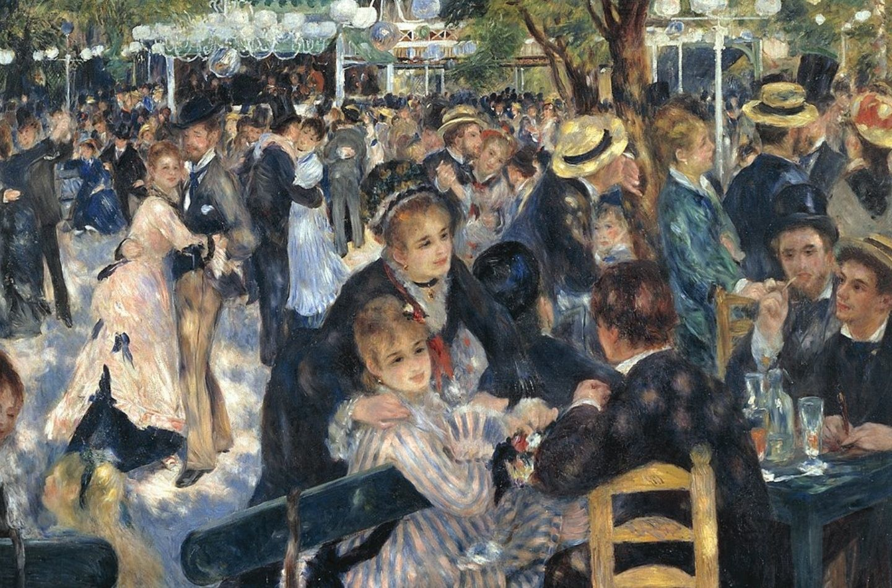

눌러서 크게 보기
물랭 드 라 갈레트의 무도회
작가
피에르 오귀스트 르누아르 (1841–1919)
제작
1876년, 캔버스에 유채
크기
131 × 175cm
소장
오르세 미술관, 파리
오르세 데이트 · 1화
르누아르, 파리의 일요일을 그리다
피에르 오귀스트 르누아르 〈물랭 드 라 갈레트의 무도회〉
문장을 누르면 그 대목부터 들을 수 있습니다.
10
10
재생을 누르면 해설이 시작됩니다
0:00 / 10:09
1.0×
따라가기
물랭 드 라 갈레트의 무도회 · 좌우로 움직여 보세요
닫기